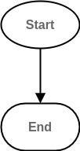
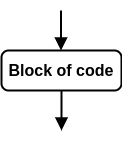
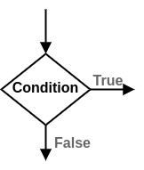

2 Control Flow Diagrams#
Control flow is the order in which a program is executed. A control flow diagram illustrates this with interconnected nodes. This page serves to introduce you to the format of the control flow diagrams used in this book. You may wish to come back to this page once you have encountered a control flow diagram.
The program must have a starting point, in the diagrams this is illustrated by an elliptical node:
Fig. 1 Start node of a control flow diagram.#
Control will always flow to an end point, this is illustrated as a rectangle with rounded corners:
Fig. 2 End node of a control flow diagram.#
The flow of control from one node to another is illustrated by arrows. Read the diagram by starting from the “Start” node and following the arrow from one node to the next. For example an empty program would be illustrated by:

Fig. 3 Control flow of an empty program, start node to end node.#
A block of code is illustrated using a rectangular node:

Fig. 4 Control flow in and out of a block of code.#
The contents of this node are executed in the usual way before control leaves this node and flows through the rest of the diagram.
Sometimes programs require possible branching in their control flow. This is where the essence of logic comes in. These branches can be considered as stemming from questions (or rather conditions that evaluate to true or false), the different branches themselves are the potential answers. This is illustrated using a diamond shaped node:

Fig. 5 Branching node where control follows a line depending on the outcome of the condition in question.#
If you are reading a control flow diagram that branches, start by following one branch at a time.
Sometimes it will be necessary to insert text into a control flow diagram that isn’t present in the code or pseudo code. In these cases that text will be gray, and the text which actually appears in the code will be black.
Fig. 6 Black text is directly from the source code, gray text is inserted into the diagram for context.#